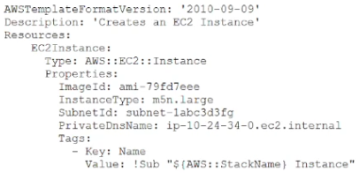

原文
この翻訳を評価してください
いただいたフィードバックは Google 翻訳の改善に役立てさせていただきます
CloudOps エンジニアが次の AWS CloudFormation テンプレートを調べています。

ある企業が、自社のAWSワークロードに関連付けられたリソースにユーザー定義タグを適用しました。タグを適用してから20日後、同社はAWS Cost Explorerコンソールでタグを使用してビューをフィルタリングできないことに気づきました。
この問題の原因は何でしょうか？
環境は100台のAmazon EC2 Windowsインスタンスで構成されています。すべてのEC2インスタンスには、ログファイルをキャプチャするための基本設定ファイルを備えたAmazon CloudWatchエージェントがデプロイされ、実行されています。50台のインスタンスに存在するDHCPログファイルをキャプチャするという新たな要件が発生しました。
この新たな要件を満たすための最も運用効率の良い方法はどれでしょうか？
ある企業がAmazon S3バケットにバックアップを保存しています。バックアップは作成後少なくとも3ヶ月間は削除してはなりません。
この要件を満たすために、クラウドオペレーションエンジニアは何をすべきでしょうか？
ある企業のクラウドオペレーションエンジニアが、アプリケーションのコンポーネント間の通信に関するトラブルシューティングを行っています。同社はVPCフローログをAmazon CloudWatch Logsに公開するように設定しましたが、CloudWatch Logsにはログが記録されていません。VPC
フローログがCloudWatch Logsに公開されない原因は何でしょうか？
ある企業がレガシーアプリケーションをAWSに移行しています。同社は、複数のアベイラビリティゾーンにまたがるAmazon EC2インスタンスにレガシーアプリケーションを手動でインストールおよび構成します。同社は、アプリケーション用にアプリケーションロードバランサー（ALB）を設定します。ターゲットグループのルーティングアルゴリズムを重み付きランダムに設定します。アプリケーションはセッションアフィニティを必要とします。
同社がアプリケーションをデプロイした後、ユーザーから、レガシーバージョンのアプリケーションには存在しなかったランダムなアプリケーションエラーが報告されます。ターゲットグループのヘルスチェックでは、障害は検出されません。同社はアプリケーションエラーを解決する必要があります。
この要件を満たすソリューションはどれですか？
ある企業が、ポイントインタイムリカバリ、バックトラッキング、自動バックアップが有効になっているAmazon Aurora MySQL DBクラスターを使用しています。CloudOpsエンジニアは、DBクラスターを過去72時間以内の特定のリカバリポイントにロールバックできる必要があります。リストアは同じ本番DBクラスター内で完了する必要があります。
これらの要件を満たすソリューションはどれですか？
CloudOps エンジニアが、失敗した AWS CloudFormation スタックの作成に関するトラブルシューティングを行っています。CloudOps エンジニアが問題を特定する前に、スタックとそのリソースが削除されてしまいました。今後のデプロイのために、CloudOps エンジニアは CloudFormation が正常に作成したリソースをすべて保持する必要があります。
この要件を満たすために、CloudOps エンジニアは何をすべきでしょうか？
ある企業は、Amazon EC2インスタンス上でElastic Load Balancing（ELB）ロードバランサーの背後で公開Webアプリケーションを実行する予定です。同社のセキュリティチームは、AWS Certificate Manager（ACM）証明書を使用してWebサイトを保護したいと考えています。ロードバランサーは、すべてのHTTPリクエストを自動的にHTTPSにリダイレクトする必要があります。
これらの要件を満たすソリューションはどれでしょうか？
ある企業は、AWS Organizations を使用して一連の AWS アカウントを管理しています。この企業は組織内に組織単位 (OU) を設定しています。アプリケーション OU は、さまざまなアプリケーションをサポートしています。CloudOps
エンジニアは、CostCenter-Project タグが付与されていない Amazon EC2 インスタンスを、アプリケーション OU 内のどのアカウントにも起動できないようにする必要があります。この制限は、アプリケーション OU 内のアカウントにのみ適用される必要があります。
これらの要件を満たすソリューションはどれですか？